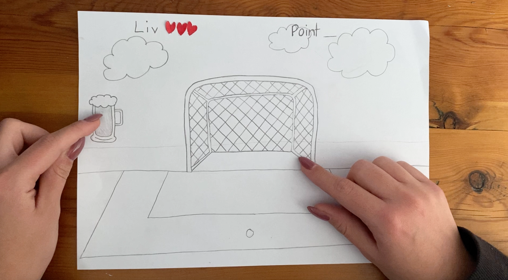
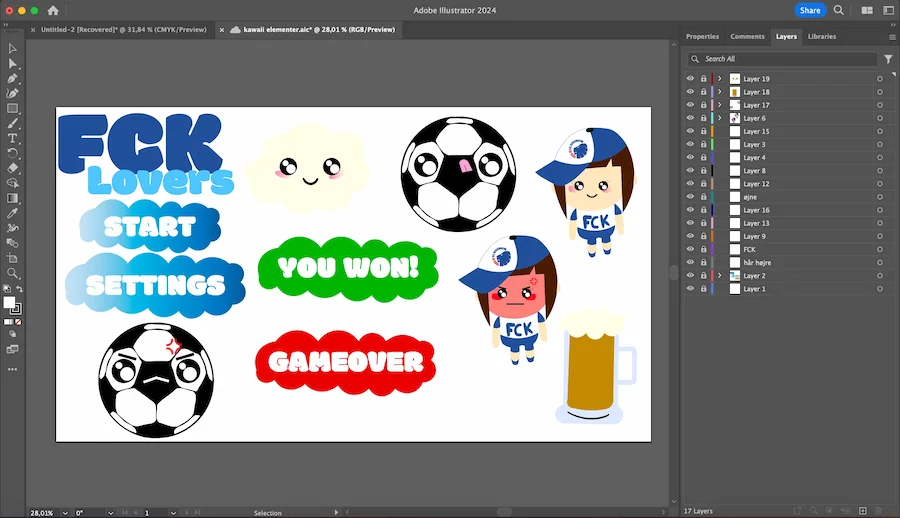

Tema - 4
Grundlæggende Animation
Om tema 4
I dette tema blev vi introduceret til programmeringssproget, Javascript. Vi har lært om hvordan man laver en hjemmeside mere dynamisk, hvilket vi skulle bruge sammen med css animationer. Vi skulle udvikle et spil og måtte selv bestemme hvordan det skulle se ud og hvad det skulle handle om, men der var nogle krav for at gøre det så simpelt for os som muligt.
Vi lært at bruge forskellige adobe programmer såsom Adobe Illustrator til at tegne baggrunden og spilelementerne. Ved hjælp af Adobe Audition har vi også lært at optage lyde selv og derefter redigere i lyden. Dette betød at vi ikke behøvede finde lyde og selv kunne personliggøre lydene.
Færdigheder
- At få en dybere forståelse for Javascript
- At anvende Adobe Illustrator
- At anvende Adobe Audition
- At lave paper prototype
- At lave Aktivitetsdiagram samt State Machine Diagram for et spil
Afleveringer
- 04.01.a_Spil-ide & papirprotype
- 04.02.01 Aktivitetsdiagram for eget spil
- 04.01.b Analyse af din valgte stil
- 04.01.c_Skitser på dit design
- 04.01.d_Rentegning
- 04.04.01 Temaopgave
Process - 04.04.01 temaopgave
Idegenering, skitsering og stil
Først skulle vi generere ideer og afgøre, hvad vores spil skulle handle om. Vi lavede en idéøvelse, hvor vi skulle komme med 5 tilfældige ideer og 5 ideer jeg selv valgte. Efter denne øvelse valgte jeg at udvikle et spil om Brøndby IF og FCK. Herefter skulle jeg vælge en bestemt stilart, som jeg ville anvende konsekvent i mit spil. Jeg valgte den japanske Kawaii-stil, der kendetegnes ved søde og nuttede væsner med store øjne samt typisk bløde former og kanter.
Vi skulle skitsere ideen i hånden, ved at tegne spilementerne og baggrunden. Udfra det lave en paper. Baseret på dette lavede vi en papirprototype og udarbejdede en video, der forklarede, hvordan spillet skulle forløbe sig.
Herefter gik vi i gang med at skitsere disse elementer i Adobe Illustrator. Dette gav os indsigt i programmet og hjalp os med at definere det visuelle udtryk.
Paper prototype
Illustrator

04.04.01 - Aktivitetsdiagram og State Machine Diagram
Aktivitatesdiagram
Efter jeg havde færdigtegnet mine elementer i Illustrator, skulle jeg lave et aktivitetsdiagram og state machine diagram for at få et overblik over hvordan mit spil skulle forløbe sig.
Først lavede jeg aktivitetsdiagrammet, som afspejler den interne del af spillets flow, og som i høj grad bruges til interaktive systemer. De fire vigtige elementer i dette diagram er start, slut, handling og beslutning.
Man kan se hvad der sker, hvilke lyde og hvilke animationer der kommer når man trykker på et logo. På mit spil, kan man se at når man for eksempel klikker på FCK logoerne der falder ned, kommer der en yeah lyd, det forsvinder, og man 1 point. og modsat, når Brøndby logoerne falder ned kommer der en bræk lyd og logoet forsvinder, og man mister 1 liv. Til højre kan man se at spillet varer 30 sekunder, og hvis man ikke når at få 10 point så taber man.
State Machine Diagram
State Machine Diagrammet er mere dybdegående, og skulle være med til at planlægge kodningen for spillet. Det viste mig hvor mange funktioner der skulle opretttes og hvordan de er forbundet. Dette lagde fundamentet for mit spil så det var mere simpelt og overskueligt at kode bagefter.